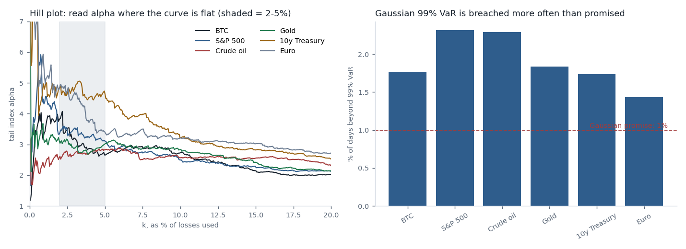
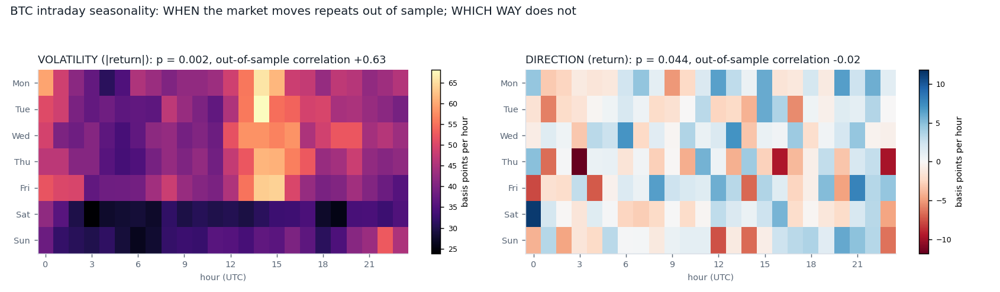
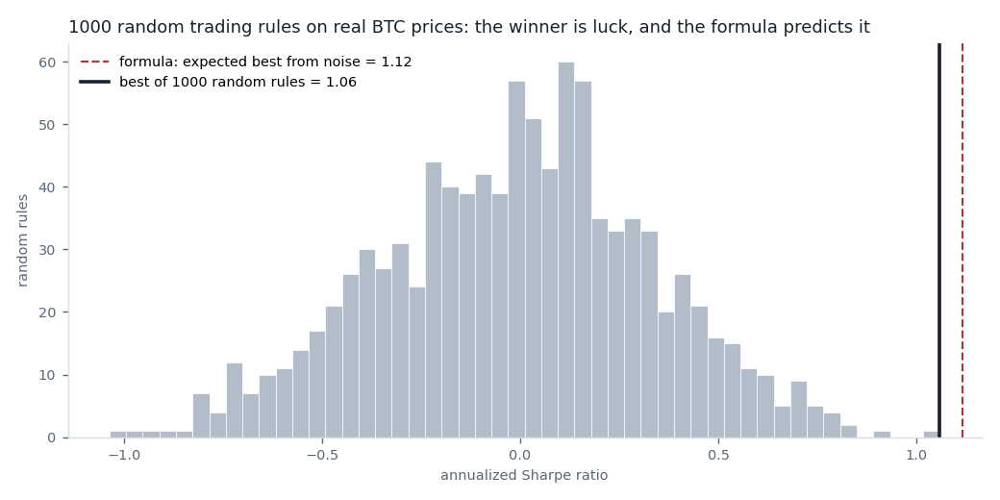
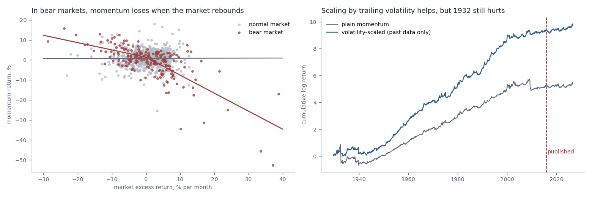
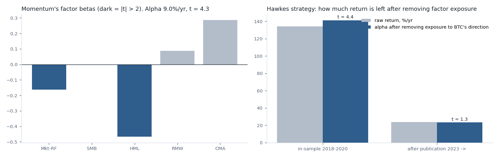
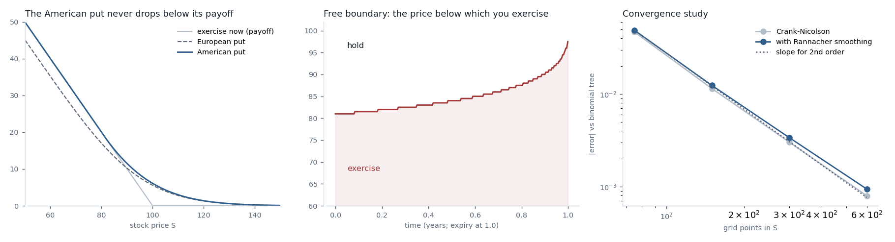
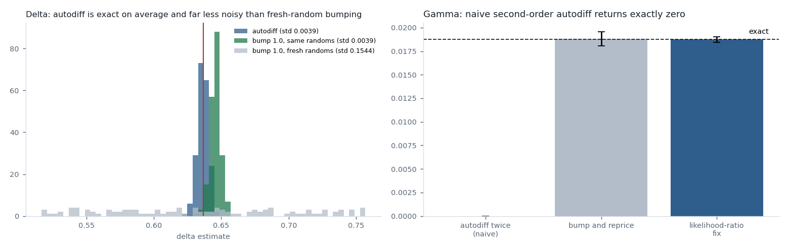
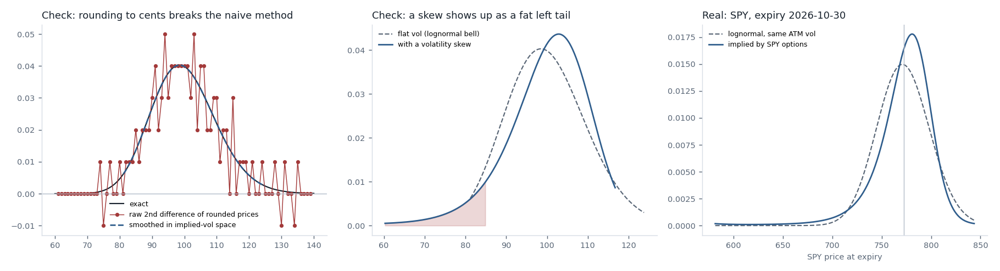
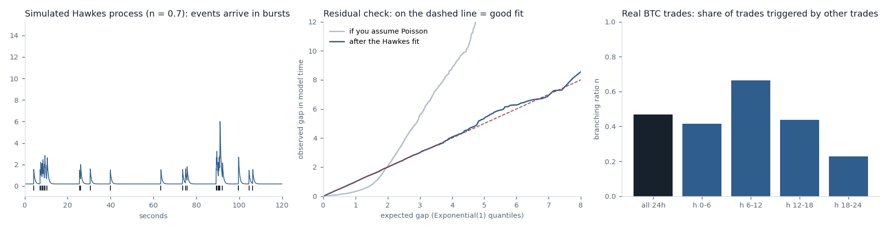
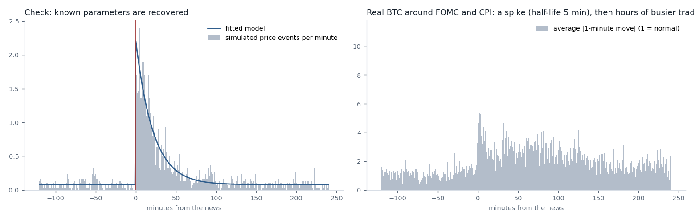

Ten quant mini-projects
Ten standard tools of quantitative finance, each built as one short Python file. The rule for all ten: check the method on data where the answer is known before trusting it on a real market.
The topics range from tail risk and option pricing to how markets absorb news. Several results went against what I expected, and I report those too.
The ten projects
- 01Hill estimator of the tail index
- 02Intraday seasonality map
- 03Backtest overfitting detector (Deflated Sharpe Ratio)
- 04Regime-dependent momentum
- 05Factor neutrality check
- 06Crank-Nicolson and projected SOR
- 07Monte Carlo sensitivities by automatic differentiation
- 08Implied risk-neutral distribution (Breeden-Litzenberger)
- 09Hawkes process on trade arrivals
- 10Information diffusion: news to price
How fat are the tails?
ConfirmedRisk models often assume returns follow a bell curve. If large losses instead follow a power law, the bell curve badly understates them. The tail index alpha measures how fat the tail is: the smaller, the fatter.

- Method
- Hill estimator on the largest daily losses of Bitcoin and five futures markets. The estimate depends on how many losses count as “the tail”, so I plot it against that choice and read it where the curve is flat.
- Check
- On simulated data the estimator is exact for a pure power law (2.45 for a true 2.5) and reads low for other fat-tailed shapes (3.6 for a true 5), so I treat the real numbers as approximate.
- Result
- Tail index of about 3 for Bitcoin, the S&P 500, crude oil and gold. Below 4 means kurtosis is not even finite.
- A “99%” Gaussian risk limit, built only from past volatility, was broken on 1.4% to 2.3% of days in every market, not 1%.
- Breaches cluster: after an S&P 500 breach, the chance of another the next day was 12%.
- Limits
- The Hill estimator is biased when the tail is not a pure power law. Futures data is licensed and not included in the code folder.
Source: Hill (1975), A simple general approach to inference about the tail of a distribution. · Code
Does the hour of the week matter for Bitcoin?
Half trueHeatmaps of average returns by hour look full of patterns. But 168 cells of pure noise also make a pattern. Which patterns are real?

- Method
- 76,513 hourly bars, 2018 to 2026. Two maps: the size of moves and the direction of moves. Each is tested by shuffling the hour labels within every week 500 times, and by checking whether the 2018–21 map predicts the 2022+ map.
- Check
- The shuffle keeps every week's returns and destroys only when in the week they happened.
- Result
- When Bitcoin moves is real: p = 0.002, and the early map correlates +0.63 with the later one. The busiest hour is 14:00 UTC, and weekends are 27% quieter.
- Which way it moves is not: p = 0.044 looks borderline, but the early map has a correlation of −0.02 with the later one. It does not repeat.
- Limits
- One exchange's prices, UTC hours only. A p-value of 0.044 on one of two tests is about what luck produces.
Source: Method: permutation test, as in my mcpt-lab project. · Code
How good does a lucky backtest look?
ConfirmedTry enough strategies on any data and the best one looks excellent by luck alone. How excellent, and can that be predicted?

- Method
- 1,000 random trading rules on real Bitcoin prices, each a coin flip with a random holding period. I keep the best and compare it with the formula for the best-of-N expected from pure noise. The Deflated Sharpe Ratio then gives the probability that a result beats that benchmark.
- Check
- The random rules are the check: they have no skill by construction.
- Result
- The best random rule had a Sharpe ratio of 1.06. The formula predicted 1.12.
- Judged alone, that rule scores 0.999 (“certainly real”). Counting the 999 others, it scores 0.43.
- My own surviving strategy scores 0.90 after publication if counted as one test, and 0.45 if charged for all 25 tests in my ledger. Both are under the usual 0.95 bar.
- Limits
- The formula assumes independent trials; real strategy variations are correlated, which makes it conservative.
Source: Bailey and López de Prado (2014), The Deflated Sharpe Ratio. · Code
When does momentum crash?
Replicated, fix has fadedMomentum (buy past winners, short past losers) earns a premium on average but has rare, violent crashes. Are the crashes predictable, and does the published fix still work?

- Method
- US momentum factor, monthly, 1929 to 2026. A “bear market” is a negative market return over the previous 24 months, known in advance. I test whether momentum behaves like a written call option on a market rebound, then test scaling exposure by past volatility.
- Check
- All regime flags and volatility estimates use only earlier months.
- Result
- Momentum earned +10.4% a year in normal markets and −9.3% in bear markets.
- Its market beta is about 0 normally, −0.36 in a falling bear market and −0.90 in a rebounding one. All five of its worst months were months when the market rose, and four of them were in bear markets.
- Volatility scaling lifts the Sharpe ratio from 0.43 to 0.70 over the full history. Since the fix was published (2016 on) it is 0.10 against 0.26: better, but both weak.
- Limits
- Monthly data, so the volatility estimate is crude. The post-publication sample is only 127 months.
Source: Daniel and Moskowitz (2016), Momentum crashes; Barroso and Santa-Clara (2015), Momentum has its moments. Data: Kenneth French Data Library. · Code
Is a strategy's return really its own?
PassedA strategy can look skilled while really being a hidden bet on something well known, such as the market going up. Regressing its returns on known factors separates the two.

- Method
- Regression with Newey-West standard errors. Applied to the momentum factor against five Fama-French factors, and to my own Bitcoin strategy against Bitcoin's direction and the size of its moves.
- Check
- 500 fake strategies built as 0.5 × market + noise, with no skill. The test found a beta of 0.501 and raised a false alarm on 5.0% of them, exactly the rate it should.
- Result
- Momentum is not a repackaged factor: a 9.0% a year alpha remains (t = 4.3), with a negative loading on value.
- My Hawkes strategy has no hidden bet on Bitcoin's direction (beta −0.20 in-sample, +0.01 after publication, neither significant).
- It does depend on Bitcoin making large moves, and its alpha t-statistic falls from 4.4 in-sample to 1.3 after publication.
- Limits
- “The size of Bitcoin's move” is not something you can trade, so that loading describes the strategy but is not a hedgeable factor.
Source: Fama and French (1993, 2015). Data: Kenneth French Data Library. · Code
When should you exercise an American put?
VerifiedA European put has a pricing formula. An American put, which can be exercised at any time, does not: the price at which you should exercise has to be found together with the option's value.

- Method
- The Black-Scholes equation on a grid, stepped backwards from expiry with Crank-Nicolson. Each step is solved by projected SOR: iterate towards the solution and clamp the value to the exercise payoff after every sweep.
- Check
- The European version matches the Black-Scholes formula to 0.003. The American price is compared with an independent 4,000-step binomial tree.
- Result
- American put: 6.0896 on the finest grid, against 6.0904 from the tree.
- Halving the grid spacing cuts the error by about 3.8 times, close to second-order accuracy.
- With a year left, exercise below a stock price of 81; the boundary rises to the strike at expiry.
- A standard smoothing step (Rannacher), meant to steady the sensitivities near the strike, did not improve the price here.
- Limits
- One set of parameters (strike 100, 20% volatility, 5% rate, one year), no dividends.
Source: Crank and Nicolson (1947); Cryer (1971), projected SOR; Rannacher (1984). · Code
Can a simulation differentiate itself?
Works, with one failureTraders need the sensitivities of a price (the “Greeks”). The old way reprices at a nudged input and subtracts, which is either noisy or biased. Automatic differentiation carries the derivative through the simulation instead.

- Method
- I wrote forward-mode automatic differentiation from scratch (a 30-line “dual number” class) rather than using a library, and applied it to a Monte Carlo option pricer. Black-Scholes gives the exact answers to compare with.
- Check
- 200 repeated runs of 20,000 paths each, so bias and noise are measured separately.
- Result
- Delta: unbiased (0.6363 against an exact 0.6368), with 40 times less noise than repricing with fresh random numbers.
- Gamma by differentiating twice returns exactly zero. The payoff has a kink, and its second derivative is zero on every simulated path. Autodiff differentiates the code, not the maths.
- Fix: take one of the two derivatives from the probability density instead (likelihood-ratio method). Result 0.01873 against an exact 0.01876.
- Limits
- European call only. Reverse-mode differentiation, which production systems use for many inputs at once, is not implemented.
Source: Glasserman (2004), Monte Carlo Methods in Financial Engineering; Giles and Glasserman (2006), Smoking adjoints. · Code
What do option prices say about the future?
Verified, run on real dataOption prices contain the market's probabilities for where the price will be at expiry: the density is the second derivative of the call price with respect to the strike. But a second derivative amplifies every rounding error.

- Method
- Convert each price to an implied volatility, fit a smooth curve weighted by how informative each option is, convert back to prices, then differentiate. Run on 193 SPY strikes expiring 30 October 2026.
- Check
- A fake chain with known volatility must return the exact lognormal curve (error under 0.1% of the peak). Rounding the same prices to cents makes naive differencing produce six negative probabilities; the smoothed method is unaffected.
- Result
- The market's distribution for SPY is skewed left (skew −1.7); a bell curve with the same at-the-money volatility has none.
- Options priced a 0.9% chance of a 15% or greater fall in four weeks. The bell curve says effectively zero.
- Implied forward price 772.3 against a spot of 769.6, recovered from put-call parity.
- Limits
- One snapshot, taken on a Saturday from Friday's closing quotes. These are risk-neutral probabilities: they include what investors pay for crash insurance, so they overstate real-world crash odds.
Source: Breeden and Litzenberger (1978); Figlewski (2018), Risk-neutral densities: a review. · Code
Do trades trigger more trades?
Fitted, model too simpleIf trades arrived independently they would be evenly random in time. They are not: they come in bursts. A Hawkes process, the same model used for earthquake aftershocks, lets each trade raise the chance of the next.

- Method
- Maximum-likelihood fit with an exponential kernel, using a recursion that avoids comparing every pair of trades. The key number is the branching ratio: the share of trades that are reactions to earlier trades.
- Check
- On four simulated processes with true branching ratios of 0, 0.3, 0.7 and 0.9, the fit returned 0.00, 0.29, 0.68 and 0.89, and passed the residual test each time.
- Result
- On 24 hours of real BTC/USDT trades, the branching ratio was 0.47: roughly half of trades followed from other trades, with a half-life of 0.7 seconds.
- It ranged from 0.23 to 0.66 across six-hour blocks.
- The residual test fails on the real data (p < 0.01): one exponential kernel is too simple for real markets.
- Limits
- One quiet day (2,076 trades) on a small exchange. A serious version needs a busier venue and a kernel with several time scales.
Source: Hawkes (1971); Ogata (1988); Filimonov and Sornette (2012); Hardiman, Bercot and Bouchaud (2013). · Code
How fast does the market absorb news?
Spike is real, the rest is unclearWhen a scheduled announcement lands, how big is the burst of price activity, and how quickly does it fade?

- Method
- 32 announcements (22 Federal Reserve statements, 10 inflation releases) and Bitcoin one-minute bars for 12 hours either side. Large one-minute moves are modelled as a Hawkes process excited by the news and by earlier moves.
- Check
- Simulated data with a known 15-minute half-life returns 15.0 minutes. A placebo that moves the news six hours early finds no news effect at all, on simulated and on real data.
- Result
- At the release minute, activity jumps to about 45 times the background rate, then fades with a half-life of about 5 minutes (11 minutes for Fed statements, 4 for inflation data).
- Adding the news to the model improves the fit decisively (likelihood ratio 125, where 9.2 is the 1% threshold).
- Only 3% of large moves in these windows are attributed to the news itself; 81% are the market reacting to its own moves.
- Limits
- Both announcements land at the start of the busiest US trading hours, so the hours of raised activity after the spike may be ordinary time-of-day seasonality (project 2) and not news. Only the jump at the release minute is cleanly attributable. The right control is the same clock times on days with no release, which I have not run yet.
Source: Rambaldi, Pennesi and Lillo (2015), Modeling FX market activity around macroeconomic news: a Hawkes process approach. · Code
Run them yourself
All ten files, the shared helpers and a script that downloads the public data are in the code folder. Projects 1 to 5 read Bitcoin and Kenneth French data from my mcpt-lab project. Licensed futures data used in project 1 is not included.